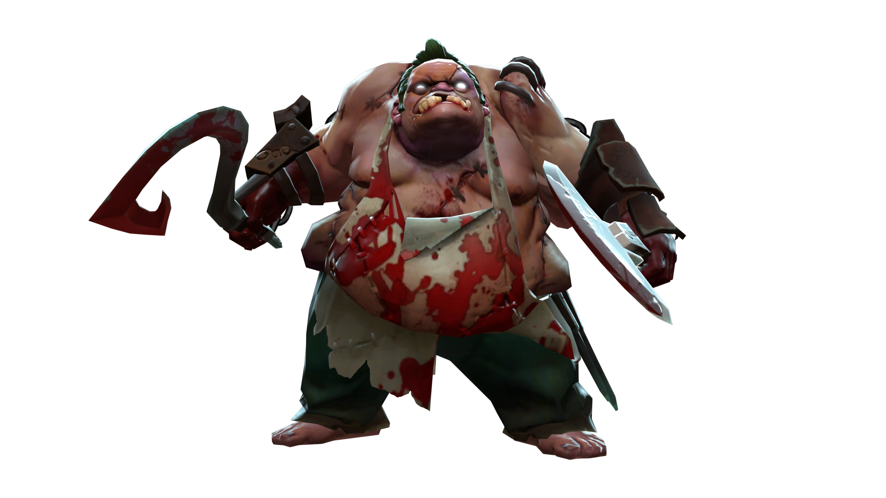
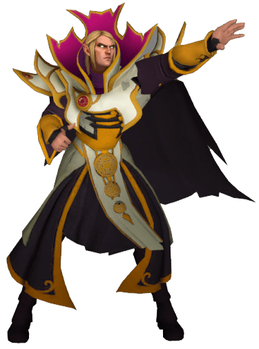

Популярные герои
Pudge
Pudge — один из самых узнаваемых героев в Dota 2. Это герой ближнего боя с атрибутом "Сила". Его ключевая способность — Meat Hook, длинный крюк, который притягивает врагов, нанося им огромный урон. Pudge обожает засады и внезапные нападения, вселяя страх в сердца оппонентов по всей карте.
Invoker
Invoker — один из самых сложных, но и самых сильных героев. Его уникальность в том, что он может комбинировать три сферы (Quas, Wex, Exort) для создания 10 разных заклинаний. Это делает его невероятно гибким героем.
Sniper

Sniper — один из самых известных и зачастую надоедливых героев в Dota 2. Это герой дальнего боя с основным атрибутом "Ловкость". Его главная сила заключается в невероятной дальности атаки.